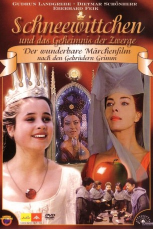

#11224 Schneewittchen und die 7 Zwerge
Alternativ: Schneewittchen und das Geheimnis der Zwerge (Englischer Titel)
 
 IMDB-Wertung: 6.5 / 10
IMDB-Wertung: 6.5 / 10  Metascore: 0
Metascore: 0 
Sie ist einfach wunderschön: Schneewittchen, des Königs einzige Tochter, - und gerade das missfällt ihrer Stiefmutter. Während der Vater an einem Kreuzzug teilnimmt, trachtet die böse Frau Schneewittchen nach dem Leben. Als der Zauberspiegel verkündet, das Mädchen sei das Schönste im Land, ist der Zorn der Königin nicht zu bremsen. Mit List und Tücke vertreibt sie Schneewittchen aus dem Schloss und befiehlt, es zu töten. Aber Schneewittchen wird gerettet und lebt versteckt hinter den sieben Bergen, bei den sieben Zwergen. Außer sich vor Wut beschließt die Stiefmutter, das Mädchen selbst zu töten. Die sieben Zwerge und ein geheimnisvoller schwarzer Ritter versuchen gemeinsam, die schreckliche Tat zu verhindern.
Jahr: 1992
Dauer: 86 Minuten
FSK: 0
Land: Deutschland Studio: MC-OneTonspuren:
Untertitel:
Auflösung: 720p (956x720) Größe: 2191 MB
Genre: Drama, Fantasy
Regisseur: Ludvík Ráza
Drehbuch: Bernd Fiedler, Jacob Grimm, Wilhelm Grimm
Soundtrack: Petr Hapka
Darsteller:
 Gudrun Landgrebe als Königin
Gudrun Landgrebe als Königin- Alessandro Gassman als Jester
- Dietmar Schönherr als King
- Martin Ruzek als Hofmeister
- Daniel Rous als Ritter Harald
- Barbora Srncová als Kitchenmaid
- Natalie Minko als Schneewittchen
- Eberhard Feik als Priest
- Sándor Köleséry als Black Knight
- Iwan Sabijak als 1st Dwarf
- Igor Sanikow als 2nd Dwarf
- Nikolai Misyura als 3rd Dwarf
- Atka Janousková als 4th Dwarf
- Imre Schnellert als 5th Dwarf
- Janos Petrowski als 6th Dwarf
- Atilla Vega als 7th Dwarf
- Václav Kotva als Lehrer Münch
- Jaroslav Luks als Weisser Ritter
Datei: X:\Märchen\Schneewittchen und die 7 Zwerge (1992, FSK0, 956x720).mkv seit 20.05.2019
Festplatte: Kinder-Filme+Trick
 Es gibt insgesamt 61 Filme in der Gruppe 'Märchen'
Es gibt insgesamt 61 Filme in der Gruppe 'Märchen'